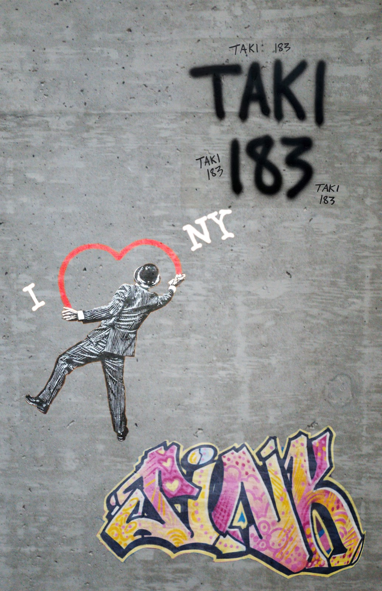

1969–1971
The signature spreads
TAKI 183 begins writing his name around the city in 1969. A 1971 New York Times article brings attention to his practice, helping popularize a form of expression built around recognition and repetition.

TAKI 183 begins writing his name around the city in 1969. A 1971 New York Times article brings attention to his practice, helping popularize a form of expression built around recognition and repetition.
Graffiti transforms trains and city walls into spaces for bold expression, then enters galleries as artists gain recognition and use public art to address social issues.
Street expression encompasses altered advertisements, paper portraits, murals, and small installations. Artists adapt techniques to their surroundings, creating recognizable local identities within an international movement.
JR’s The Chronicles of New York City appears at Domino Park, translating the lives of New Yorkers into a monumental public photographic mural.